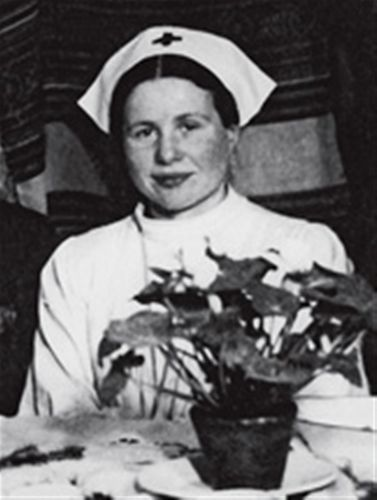

"The Angel of the Warsaw Ghetto" who rescued some 2,500 children from the
Holocaust.

Irena Sendler photo in December 1944.
Abstract
Irena Sendler was a Polish social worker who, during World War II, helped to rescue
2,500 Jewish children from the Warsaw Ghetto, and placed them in convents or with non-Jewish
families.
Facts about Irena
Irena born in Warsaw, Poland in 1910 and died in Warsaw, poland in 2008 at age 98.
As early as 1939, when the Germans invaded Warsaw, Irena began helping Jews by offering them
food and shelter.
When the Warsaw Ghetto was erected in 1940, she started by saving the orphan children. Irena
used her papers as a Polish social worker and papers from one of the workers of the Contagious
Disease Department (who was a member of the underground Zegota) to enter the Warsaw Ghetto.
Soon joined Żegota, a Polish underground group to assist Jewish people. Irena was in charge of
the Children’s Division of Zegota.
Irena and her colleagues, used many, many methods to smuggle children out. Some were carried out
in caskets or potato sacks; others left in ambulances or snuck out through underground tunnels.
Still others entered the Jewish side of a Catholic church that straddled the ghetto boundary and
left on the other side with new identities.
On October 20, 1943 , the Nazis arrested Sendler and sent her to Pawiak Prison. There they
tortured her, trying to get her to reveal the names of her associates. She refused and was
sentenced to death. However, Żegota members bribed the prison guards, and Sendler was released
in February 1944.
Sendler continued her work until the war ended, by which time she and her colleagues had rescued
some 2,500 children. It has been estimated that Sendler personally saved about 400.
"The reason I rescued the children has its origin in my home, in my childhood. I was educated in the
belief that a person in need should be helped from the heart, without looking at their religion or
nationality"